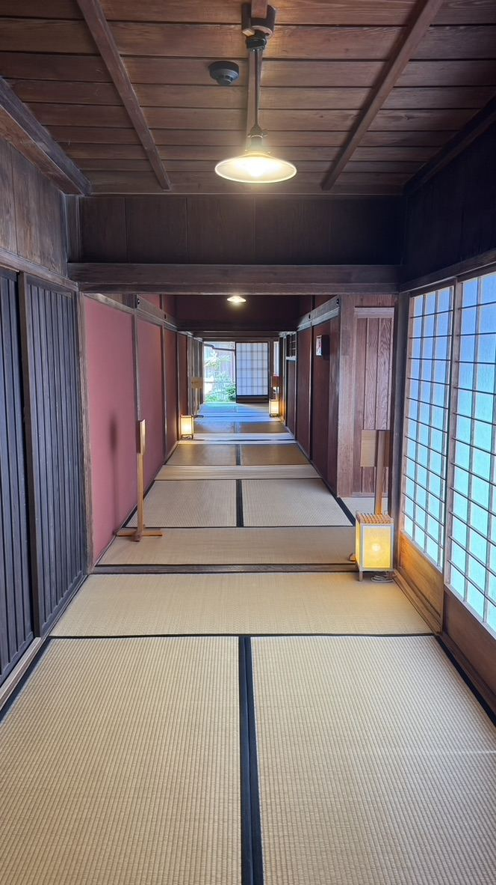
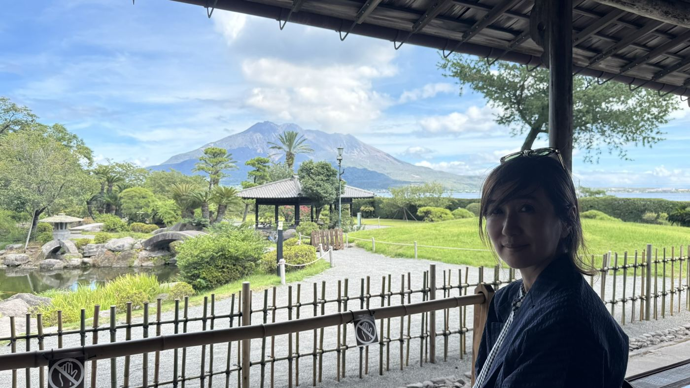
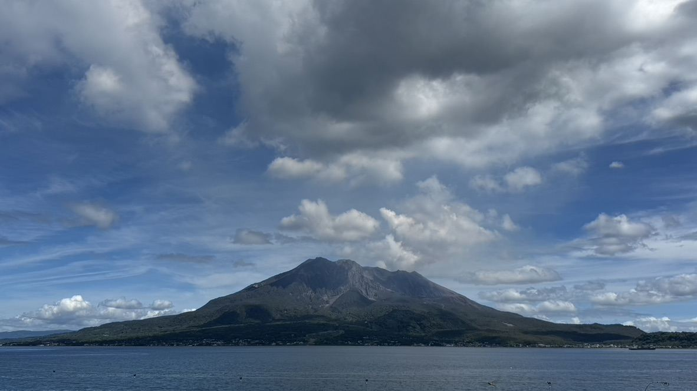
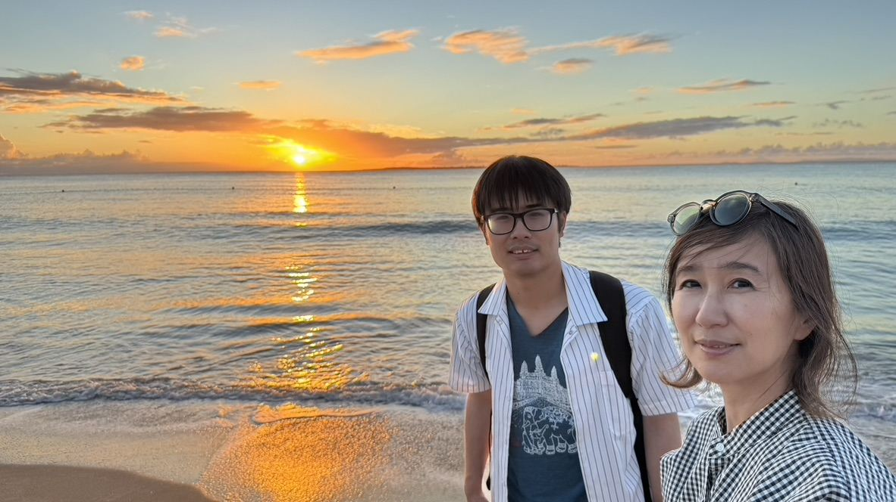
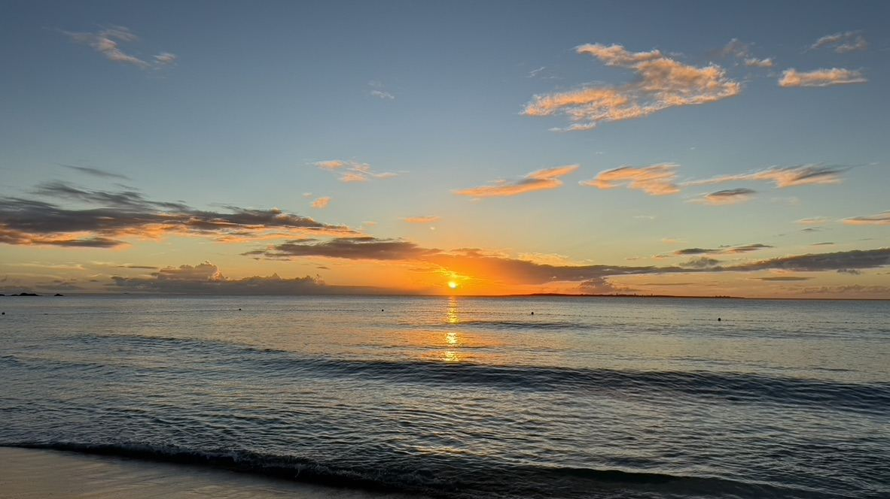

桜島と、島の夕日
羽田 → 鹿児島（仙巌園） → 鹿児島南港 → 種子島
朝、羽田からANAの便で鹿児島へ飛んだ。鹿児島では、まず仙巌園に立ち寄った。長い畳の廊下の先に、夏の光が白く差しこんでいた。庭の向こうには桜島が大きくそびえ、その頂に雲がかかっていた。
午後は鹿児島南港から高速船トッピーに乗り、波の上を滑るようにして種子島へ渡った。夕方、島に着いて浜へ出ると、ちょうど太陽が海に沈むところだった。息子と妻の影が、オレンジ色の砂の上に長く伸びていた。




